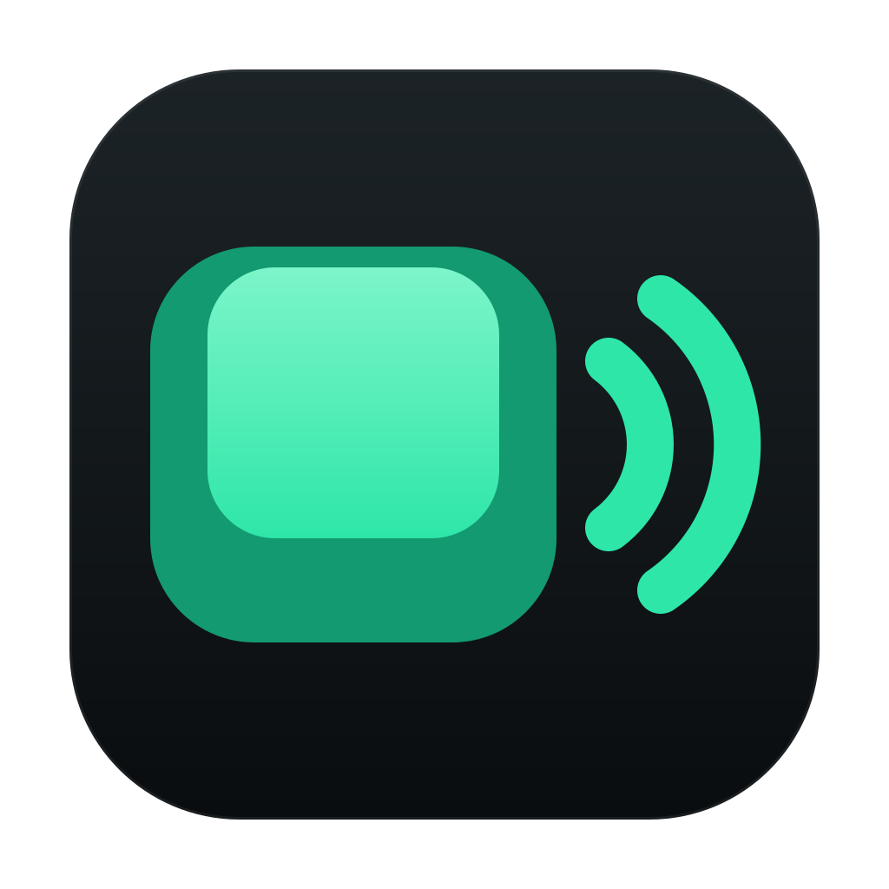

Down and up
Each key sounds when it goes down and again when it comes back up, from separate recordings, just like a real switch.

ClackboardFree and open source · macOS · Windows · Linux
Clackboard plays a recorded mechanical switch for every key you press and every key you release, spread across your desk in stereo. Your laptop keyboard, suddenly a custom board.
Free forever. No account, nothing sent anywhere.
Use your keyboard, or tap the keys. Headphones make the stereo obvious.
Pick a switch and start typing.
Each key sounds when it goes down and again when it comes back up, from separate recordings, just like a real switch.
Q sounds on the left, P on the right, the space bar in the middle. Your keyboard has width again.
A touch of random pitch on every press, so fast typing sounds like hands, not a drum machine.
Any Mechvibes sound pack works, old format or new. Drop the folder in and it shows up in the list.
Clackboard only learns which key position went down, never what you type. Nothing is recorded, nothing leaves your computer.
A small panel in the menu bar or system tray. No Dock icon, no window to manage, starts at login if you want.
From the sharp click of a blue switch and the ping of an IBM Model M to the creamy thock of linears and Topre, plus an antique typewriter. Recorded by the Mechvibes, kbsim, Keyboard Sounds and bucklespring communities, and shipped with the app.
Also inside
Lock the keyboard for 30 seconds to 5 minutes and clean it. Your mouse keeps working, and the way out is always on screen: hold the button, press Ctrl + Alt + U, or wait.
Pick a time and press Lock keyboard to clean. A short countdown lets you change your mind.
Every key you hit shows on screen, so you can see the lock holding. Sounds pause.
Turn on Detect cleaning and a cloth sweeping across the keys locks them by itself. Shortcuts and fast typing don't.
macOS 11 or later, Apple silicon and Intel.
Asks once for Input Monitoring so it can hear which keys you press. Silent while you type a password.
Download .dmgWindows 10 and 11.
Nothing to allow. Installs for your account only, no administrator needed.
Download .exe.deb, .rpm or AppImage, X11 and Wayland.
Needs read access to keyboards: sudo usermod -aG input $USER, then log in again.
Builds aren't signed by Apple or Microsoft yet, so your system asks once before opening. The install guide shows how.
Clackboard is MIT licensed. It grew out of Hushboard, which made the keyboard lock and panel, and its switch sounds come from Mechvibes. Read the code, file an issue, or add a sound pack.
View on GitHub